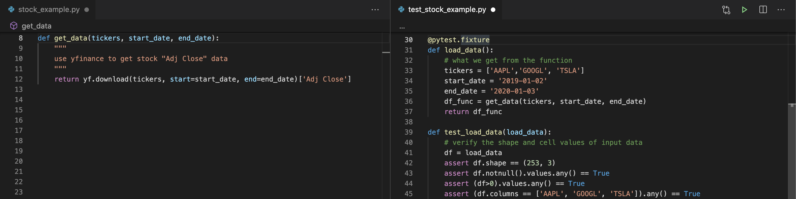
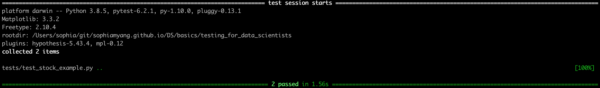
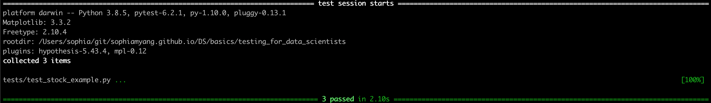
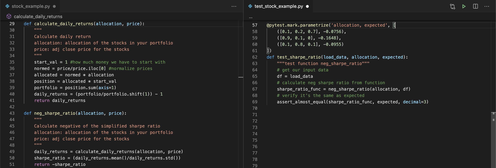
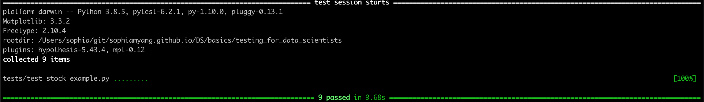
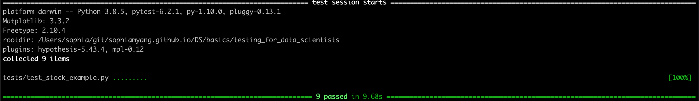

Testing for data scientists¶
Using pytest and hypothesis for unit testing
Software testing is essential for software development. It is recommended for software engineers to use test-driven development (TDD), which is a software development process that develops test cases first and then develops the software. For data scientists, it is not always easy and plausible to write tests first. Nevertheless, software testing is so important. Every data scientist should know how to do unit testing and use unit testing in their data science workflow. A lot of data scientists already use assertions, which is a very important first step to test-driven development. This article will step up from assertions and focus on two tools – pytest and hypothesis. There are other testing tools available, such as the Python built-in library unittest. unittest has similar functionalities as pytest, but I think pytest is more user friendly for data scientists and includes more useful features.
Set up¶
To install pytest and hypothesis, run conda install pytest hypothesis -c defaults -c conda-forge.
To use pytest and hypothesis, we will need to separate the main script and the testing script. In our examples below, our main script for data accessing, processing, and modeling will be called stock_example.py. Our testing script will be called test_stock_example.py. In practice, data accessing, processing, and modeling are usually in separate files and there might be multiple testing files. Also, it is recommended to save your test files under a tests directory. The structure of our files is shown below:
.
⊢ stock_exmple.py
⊢ tests
⌙ test_stock_example.py
Test data accessing and the input data¶
Data Scientists can get data from anywhere: from internal sources, vendors, and different APIs. Our data pipelines and models depend on successfully getting the right data. If we fail to get the data or if the vendor changes the data schema or format, we want to be able to catch these issues in a testing script.
In our example, we use the yahoo finance API (pip install yfinance) to get the stock data and try to optimize stock allocations in a portfolio. In stock_example.py, I wrote a function stock_data to get the adjusted closing price from given tickers and return a pandas dataframe (see image below, left panel). To test this function, in the test_stock_example.py file (see image below, right panel), we define two stocks and timeframe, and get a dataframe df_func from the function stock_data. df_truth is what we expect the function to return. Then df_func must be the same as the df_truth. Function assert_frame_equal is recommended to use when comparing two dataframes. If the two data frames are not the same, then assert_frame_equal will tell us exactly where the differences are.

Now if we run pytest or python -m pytest (if pytest does not add the current directory in the PYTHONPATH), then
we can see we pass the test. The dataframe we got from the function is indeed the dataframe we expect to see. This simple test will tell us if we have trouble accessing data through the API or if the data format changes.

Another Example and Fixture¶
If your testing case is large and you do not want to check if the two dataframes are the same, you can use assertions in the testing script to check for dataframe shape, duplicates, column names, missing values, and others. For example, in the example below, we got data from three tickers and from a longer period of time. We checked the shape of the dataframe, no null values in any of the cells, all cell values above zero, and the column names.
Note that in this example, I used a decorator @pytest.fixture to define a fixture function load_data. In this function, we load our data and return a dataframe. The default scope of fixture is scope='function' and the fixture will be invoked per function. We can provide fixture a larger scope, e.g., class, module, package, and session. Fixture function with a larger scope (e.g., @pytest.fixture(scope="module")) will allow us to load our data only once and use it in different test functions. Then we can use this fixture as a parameter in test functions. Here, I pass in the fixture load_data in my test function test_load_data and I define df = load_data to get this dataframe. Then I can do my assertions and checks like I mentioned before.

python -m pytest shows that we passed both of our tests.

Test plots¶
Data scientists often produce visualization reports or dashboards and they may not want the visualization images to change by accident. pytest-mpl allows us to test if our matplotlib images change or not. First, we need to install pytest-mpl:
conda install pytest-mpl -c defaults -c conda-forge
Next, in our main file stock_example.py (see image below, left panel), we added a function stock_plot, which produces line plots for multiple stocks. In the testing file test_stock_example.py (see image below, right panel), we added a testing function test_stock_plot which calls and tests the stock_plot function. Again, we pass in the fixture load_data in our test function test_stock_plot to get this dataframe. Note that we also added a decorator @pytest.mark.mpl_image_compare(remove_text=True) to indicate where we want to compare images.

Before we run pytest, we need to run the following to generate a baseline image for future images to compare with. Images will be saved under the tests/baseline directory. Don’t forget to take a look at the generated baseline image to verify that it is correct.
python -m pytest -k test_stock_example --mpl-generate-path=tests/baseline
Then we run pytest and compare new images with the baseline image. The --mpl flag enables comparison of matplotlib figures to reference files.
python -m pytest --mpl

Test data processing¶
Data processing sometimes takes the most amount of time and is often the most error-prone. Here in the example, I calculated daily returns and simplified sharpe ratio in two functions: calculate_daily_returns and neg_sharpe_ratio (see image below, left panel). Ideally, you should test all your functions. For simplicity and since neg_sharpe_ratio uses calculate_daily_returns, I only tested neg_sharpe_ratio.
parametrize¶
In our test script, I tested three cases using the @pytest.mark.parameterize decorator. When we test multiple cases/inputs, we could write the test out multiple times as multiple tests and test each input in a separate test, but that would be a lot of repetition. A better way to test multiple cases is to write your cases in a list and use parameterize to loop through and test your cases.

Although we only wrote one test function, since we have three testing cases, we actually passed three more tests.

There are a lot of tests you can do in the data processing step. For example, if you are running statistical models and care about statistical properties, you might test for distributions, normality, outliers, and others.
Test model¶
In our model, we show a very simple example of optimizing a stock portfolio using the sharpe ratio. I wrote a function optimize_sharpe_ratio to calculate the best allocations of stocks in your portfolio given the historical price data. The most straightforward testing for models is to test model accuracy. Since our model is very simple, we assume 100% accuracy rate and test whether our model outputs the correct stock allocations. Again, we use @pytest.mark.parameterize to test two examples in our test function test_optimization, given tickers and time periods, we expect to see a certain number of stock allocations.
 Great, now we have passed two more tests.
Great, now we have passed two more tests.

Hypothesis¶
Hypothesis is a package in Python that does property-based testing. I know this name is super confusing for data scientists. This Hypothesis testing has nothing to do with the hypothesis testing we are familiar with in statistics. All the tests we have done so far all require user defined input. What if there are corner cases we haven’t thought of? What if we want to test many different data in a given space? Hypothesis is the tool to use. It generates arbitrary data matching your strategy, run the test function over a wide range of data/test cases, and then checks if your results have certain properties that you defined.
For example, here we want to generate a Pandas dataframe with four columns with column names ‘StockA’, ‘StockB’, ‘StockC’, and ‘StockD’. We want the values of ‘StockA’ to be between 1e2 and 1e3, ‘StockB’ to be between 1e2 and 1e4, ‘StockC’ to be between 1e3 and 1e5, and ‘StockD’ to be between 1e5 and 1e6. And we want to have at least 8 rows. Here is an example of the generated data based on our strategy:

Now in the testing script (see right panel below), we would like to test the optimize_sharpe_ratio function over the randomly generated data frames. Here we need to use the @given decorator to define the strategy and insert the generated data through the parameter df in our testing function test_optimization_allocation. We can then check if the results follow a certain property or rule. Here we check if the resulting allocation values sum up to 1.
 Great! We have passed all the tests we have defined in this simple example.

Great! We have passed all the tests we have defined in this simple example.

Now we have walked through an example of how data scientists can use pytest and hypothesis to test their data science workflow. We learned how to use fixture, mpl_image_compare, parameterize in pytest, and given in hypothesis. There are many other useful features provided by the two libraries and many other things to consider in your testing. Depending on your use cases, you might have different scenarios and different edge cases. You might also want to test coverage, i.e., how much code have my test covered. When you test models, you might want to compare your model against your benchmark or alternative models.
The code mentioned in this article can be found here: stock_example.py and test_stock_example.py. Hope you enjoy this article. See you next time!
References:
https://docs.pytest.org/
https://hypothesis.readthedocs.io/
By Sophia Yang on January 9, 2021